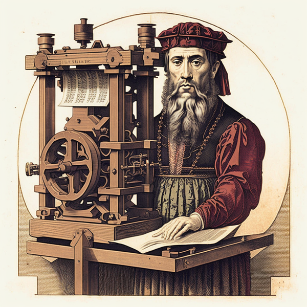
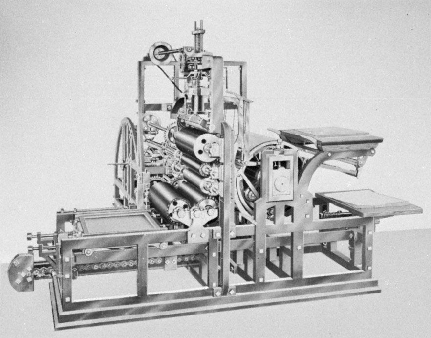
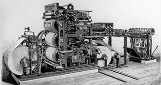
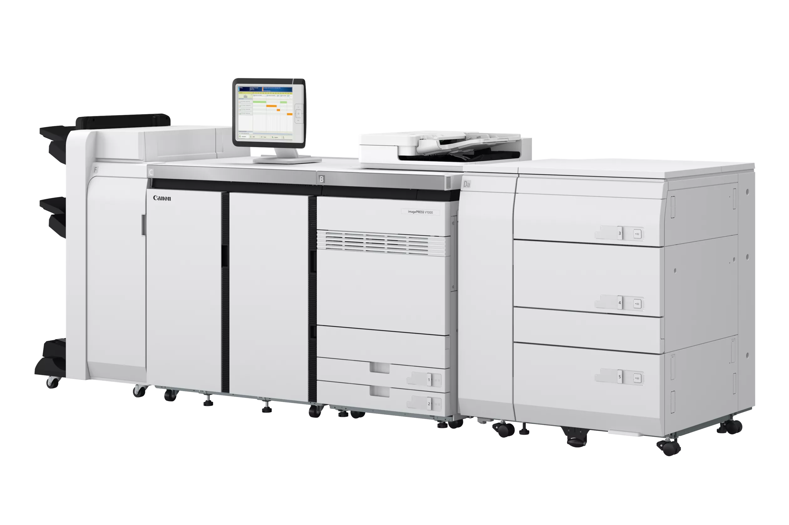

When does it start?
The history of printing is documented as having begun as early as 3000 BC, when the proto-Elamite and Sumerian cultures employed cylinders to authenticate documents written on clay tablets. Other early methods include blocking, punching, pottery printing, and cloth printing. The origin method of printing patterns on fabric, such as silk, is documented in China as early as the 7th century during the Tang dynasty, this led to the proliferation of the production of books and the spread of woodblock printing. The movable type was invented by the Chinese craftsman Bi Sheng around the 11th century during the Song dynasty, but it was limited in its use compared to the woodblock method. However, the technology did spread outside of China, as the oldest recorded use of a movable type was in the Jikji, which was printed in Korea in 1377 during the Goryeo era.

Woodcuts were used in Europe until the mid-15th century. The late medieval German inventor Johannes Gutenberg created the first printing press based on previously known mechanical printing presses and a process for mass-producing movable metal type. By the end of the 15th century, his invention and the widespread distribution of the Gutenberg Bible fueled a burgeoning economic book publishing industry throughout Renaissance Europe. The industry enabled the exchange of ideas and knowledge on an unprecedented scale, leading to the global spread of the printing press in the early modern period. As text printing evolved, new, cheaper methods of image reproduction were developed, including lithography, screen printing, and photocopying.
Printing Machine
A printing press is a mechanical device that applies pressure to the inked surface of a printing medium, such as paper or fabric, thereby transferring ink. It is a significant improvement over previous printing methods, which required repeated brushing or rubbing of fabric, paper, or other media to achieve ink transfer, and speeds up the process. Printing was commonly used for text, and its invention and spread around the world was one of the most influential events of the second millennium.


Offset Press (1870s)
The first rotary offset lithographic printing press was developed in England and patented in 1875 by Robert Barclay. This development combined mid-19th-century transfer printing technology with Richard March Hoe′s 1843 rotary press—a printing press that used metal cylinders instead of flat stones. The offset cylinder is covered with specially treated cardboard that transfers the printed image from the stone to the metal surface. Later the cardboard covers of the offset cylinder were replaced by rubber, which remains the most commonly used material.
How does it work?
Offset printing is a widely used printing technique in which an ink image is transferred from a printing plate to a blanket and then to the printing surface. Offset printing technology is combined with a lithographic printing process based on oil and water repellency, using a flat image carrier on which the image to be printed receives ink from an ink roller, while the non-printed areas attract and absorb the ink. Leave a film of water on non-printed areas without ink.

Digital Press (1993)
Digital printing is the reproduction of a digital image on a physical surface such as plain or photo paper or card stock covers, film, fabric, plastic, vinyl, magnets, labels, etc. It can come from offset printing, flexographic printing, gravure printing or letterpress printing; it can be distinguished in many ways, some of them are:
- Each impression made on the paper can be different, unlike traditional methods of creating hundreds or thousands of impressions of the same image from a set of plates.
- The ink or toner does not absorb into the substrate like traditional inks, but instead forms a layer on the surface and can be fused to the substrate through a heat treatment (toner) or UV curing process (ink) using an in-line fixer.
- Typically less waste is required in terms of chemicals and paper waste used in setting up or setting up (shading the image and checking placement).
- It′s ideal for rapid prototyping or low-volume production, which means it&pprime;s more suitable for a wider range of designers and more cost-effective for low-volume production.
